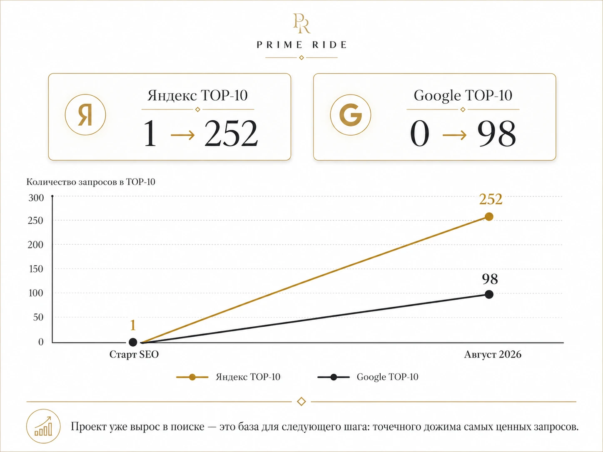
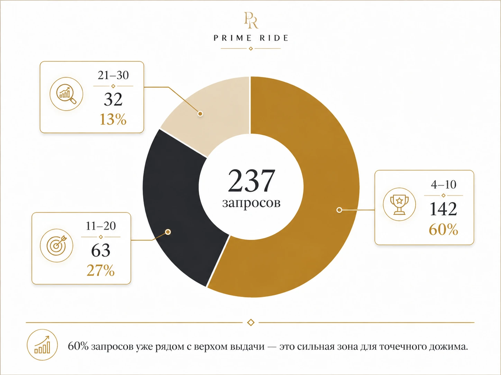
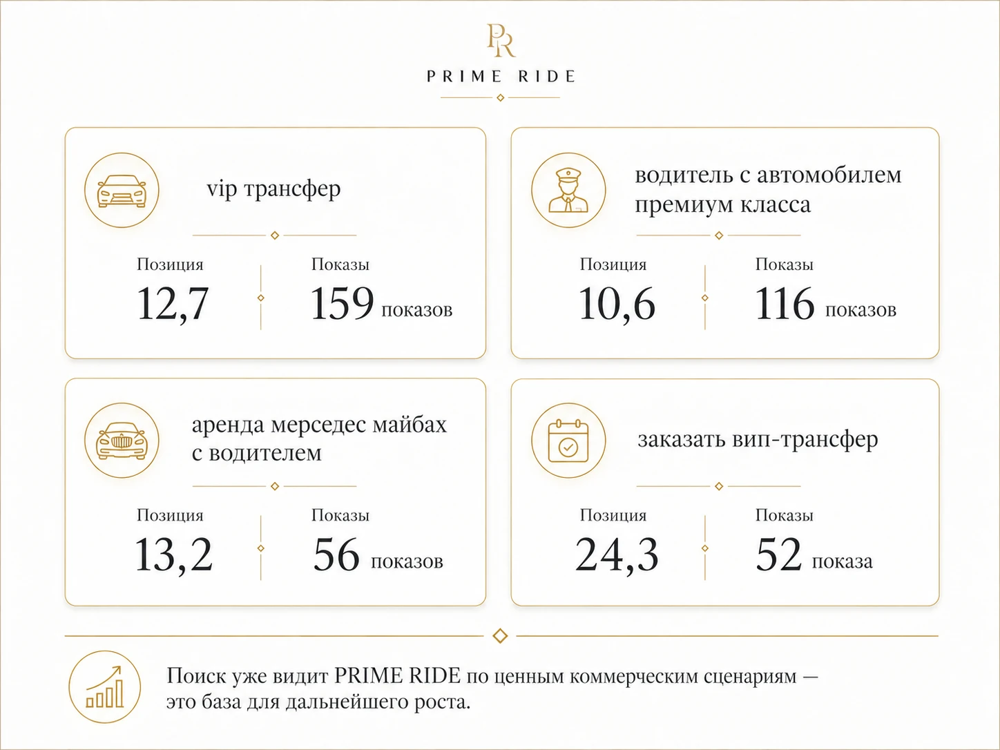

ПОИСК: УСКОРИТЬ РОСТ, НЕ ЛОМАЯ ИМИДЖ
Программа ускорения на базе действующего SEO
Поиск для Prime Ride — стратегический канал роста, с отдельным фокусом на Google. SEO с марта уже сформировало рабочую базу и в Яндексе, и в Google: 252 запроса находятся в TOP-10 Яндекса, 98 — в TOP-10 Google. При этом именно в Google сейчас особенно сильный резерв: еще 237 коммерческих запросов стоят на позициях 4–30. Часть классических изменений на сайте мы сознательно не внедряем, потому что они могут противоречить премиальному образу бренда.
ЧТО ПРЕДЛАГАЕМ
На базе уже созданного SEO-фундамента подключить работу с поведенческими факторами по запросам, где Яндекс и Google уже ранжируют Prime Ride. Приоритет — Google, где сейчас больше пространства для роста. Цель — ускорить движение подготовленных SEO-запросов к высоким позициям и расширить поисковую видимость.

SEO остается фундаментом программы: оно формирует релевантность, страницы и позиции, а работа с поведенческими факторами подключается к тем зонам, которые SEO уже подготовило для ускорения.
ГДЕ УЖЕ ЕСТЬ ПОТЕНЦИАЛ
Google уже показывает Prime Ride по коммерческим запросам — рядом с TOP есть заметный резерв роста

По данным Search Console, 237 запросов находятся в зоне 4–30.
Особенно интересны коммерческие запросы с уже сформированным спросом и позициями рядом с TOP:

ПОЧЕМУ ЭТО ХОРОШАЯ ЗОНА ДЛЯ ДОЖИМА
142 запроса уже находятся на позициях 4–10; еще 95 — на 11–30. Google уже считает страницы Prime Ride подходящими под эти запросы. Задача — усилить именно те точки, где до ТОП осталось несколько позиций.
Яндекс подтверждает, что SEO-фундамент работает: «такси мерседес майбах москва» — 4 место, «премиум такси в москве» — 6, «аренда бизнес авто с водителем» — 8. Для клиента это одна программа, но основной дополнительный фокус сейчас логично дать Google.
КАК РАБОТАЕМ
Дополнительный рычаг на готовом SEO-фундаменте — без превращения сайта в SEO-шаблон
Отбираем пул
Берем не все ядро, а коммерческие запросы из зоны 4–30: спрос, текущая позиция, релевантная страница и ценность направления для бизнеса.
Фиксируем стартовую точку
Для выбранных запросов фиксируем позиции, показы, клики и органический трафик по посадочным страницам.
Подключаем усиление
По согласованному пулу подключаем технологию работы с поведенческими факторами: усиливаем качественные взаимодействия с сайтом по приоритетным поисковым сценариям. Задача — поднять позиции по выбранным коммерческим запросам и расширить долю целевой аудитории, которая встречает Prime Ride в поиске.
Пересобираем приоритеты
Каждый месяц смотрим позиции и органический трафик; раз в квартал пересматриваем пул и подключаем новые запросы, которые обычное SEO вывело в рабочую зону.
ЧТО ПРОДОЛЖАЕМ ДЕЛАТЬ НА САЙТЕ
Техническое SEO, индексация, структура, релевантные страницы, внутренняя связность, UX и коммерческие факторы — все изменения, которые помогают поиску и не ломают образ PRIME RIDE. Работу с поведенческими факторами подключаем только к запросам, для которых SEO уже создало релевантность и позиции. Новые зоны сначала выводим в рабочий диапазон через SEO, после чего можем дополнительно ускорять их.
Горизонт — 12 месяцев. По мере роста обычного SEO в программу можно подключать новые зоны, поэтому она работает как постоянный ускоритель, а не как разовая акция.
РЕЗУЛЬТАТ И СТОИМОСТЬ
Смотрим на долю поискового спроса Prime Ride, а не на саму технологию
КОНТРОЛИРУЕМЫЕ KPI
- Рост позиций по согласованным коммерческим запросам.
- Рост доли запросов в TOP-10 / TOP-5 / TOP-3.
- Рост органических кликов и трафика на приоритетные страницы.
ПОЧЕМУ ЭТО ИМЕЕТ СМЫСЛ ДЛЯ БИЗНЕСА
Поисковый канал показывает качество визита: отказы около 17%, глубина — 2,3 страницы.
Качественный канал занимает пока еще сравнительно небольшую долю — рост видимости позволяет забирать больше целевого спроса конкурентов по нише.
Дополнительно к текущему SEO · горизонт 12 месяцев
ЧТО ПОКУПАЕТ PRIME RIDE
- Находим коммерческие запросы с реальным потенциалом ТОПа в Google / Яндексе; отдельный приоритет даем Google и сценариям, которые нельзя агрессивно раскрывать на сайте без ущерба премиальному образу бренда.
- По выбранному пулу подключаем технологию работы с поведенческими факторами и усиливаем качественные взаимодействия с приоритетными страницами.
- Дожимаем целевые запросы к высоким позициям, чтобы Prime Ride чаще встречался аудитории в поиске и занимал большую долю выдачи относительно конкурентов.
- По мере роста обычного SEO подключаем новые запросы: задача программы — последовательно расширять поисковую видимость, узнаваемость бренда и число качественных контактов с целевой аудиторией.
ДЛЯ СТАРТА
- Согласовать бюджет и подключение программы.
- Подтвердить приоритетные направления бизнеса и бренд-ограничения для сайта.
- Зафиксировать первый пул запросов и стартовую точку.
Итог: SEO остается фундаментом поискового роста Prime Ride. Именно благодаря уже созданной релевантности и позициям мы можем подключить работу с поведенческими факторами как следующий инструмент ускорения — в первую очередь по Google-запросам, где сейчас особенно большой резерв роста и где имидж бренда ограничивает часть классических изменений на сайте.